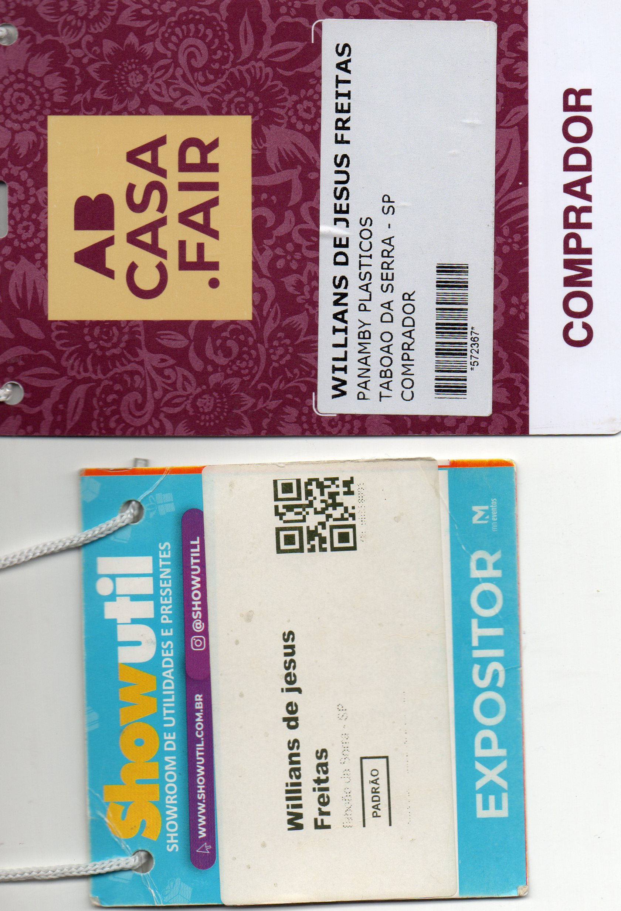

Olá, eu sou
Administração | Análise e Desenvolvimento de Sistemas
Profissional formado em Administração, com experiência nas áreas administrativa, comercial e atendimento ao cliente, atualmente cursando Análise e Desenvolvimento de Sistemas.
Tenho interesse em desenvolvimento web, programação, banco de dados, análise de dados e soluções tecnológicas.
Sou formado em Administração e atualmente curso Análise e Desenvolvimento de Sistemas.
Possuo experiência profissional nas áreas administrativa, comercial e de atendimento ao cliente, além de participação em feiras e eventos representando empresas do setor.
Atualmente estou direcionando meu desenvolvimento profissional para a área de tecnologia, ampliando meus conhecimentos em programação, desenvolvimento web, banco de dados e análise de dados.
Busco oportunidades que permitam aplicar meus conhecimentos, participar de projetos reais e continuar evoluindo profissionalmente.
Análise e Desenvolvimento de Sistemas
Cursando
Administração
Graduação concluída
Vendedor
Atuação no setor comercial, atendimento a clientes, acompanhamento de pedidos, relacionamento com representantes e suporte às atividades relacionadas ao processo de vendas.
Auxiliar Administrativo
Suporte às rotinas administrativas, organização de documentos, atendimento e apoio às atividades internas.
Auxiliar Administrativo
Atendimento, organização de informações e apoio às atividades administrativas.
Jovem Aprendiz
Apoio administrativo, organização de documentos e suporte às rotinas internas.
Participação em feiras do setor de utilidades e artigos para o lar, representando a empresa em ações comerciais, relacionamento com clientes e apresentação de produtos.

Participação profissional
Participação em feira voltada ao setor de casa, decoração e utilidades, ampliando o contato com clientes, fornecedores e profissionais do mercado.
Participação como expositor
Participação representando a empresa como expositor, com atuação no atendimento a visitantes, apresentação de produtos, relacionamento comercial e fortalecimento da presença da marca durante o evento.
Site pessoal responsivo desenvolvido utilizando HTML, CSS e JavaScript para apresentar formação, experiência, projetos e qualificações profissionais.
Projeto voltado para análise de indicadores, desempenho de vendas e acompanhamento de metas comerciais.
Projeto acadêmico criado para cadastro, organização e gerenciamento de informações.
Documento de recomendação referente à minha experiência profissional.
Visualizar CartaConfira minhas certificações, cursos e qualificações profissionais reunidos em um único documento.
Documento completo contendo certificados de cursos e qualificações nas áreas de tecnologia, administração, informática, desenvolvimento profissional e negócios.
Interessado em conhecer melhor meu trabalho ou conversar sobre oportunidades profissionais?